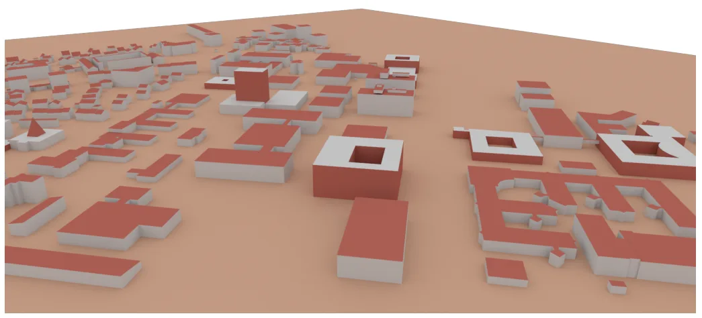
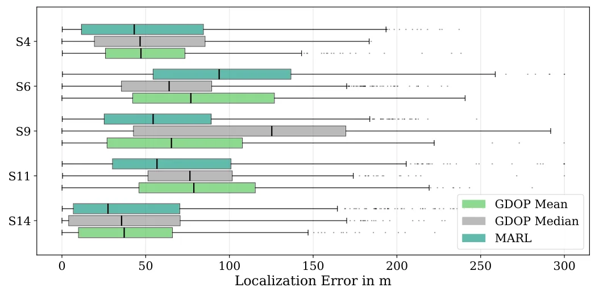
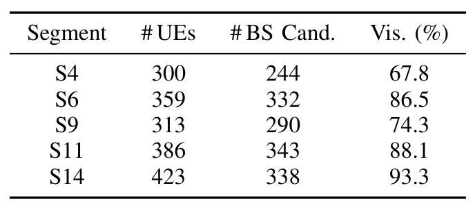
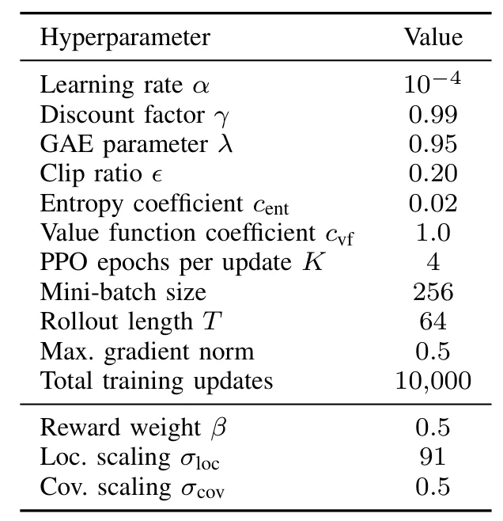
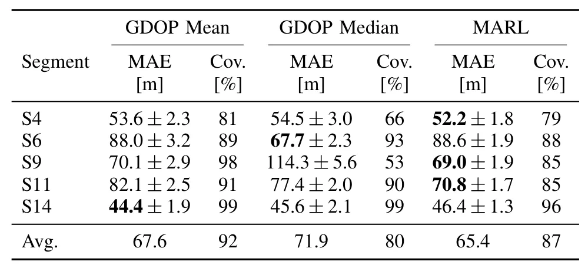

面向 TDOA 定位的多智能体强化学习基站布设Multi-Agent Reinforcement Learning for Base Station Placement in TDOA-Based Localization
直接命中 NLOS/multipath 环境感知定位设计，并使用三维场景与 CIR；整体平均增益仅约 3%且分区不稳定，尚非 GNSS/SLAM 融合算法。
一句话工作总结
用三维场景 ray tracing 与多智能体 PPO 联合优化 TDOA 基站位置，把 NLOS 和多路径传播显式纳入布设。
摘要
该工作面向 5G/6G TDOA 定位中的基站布设，指出仅依赖 GDOP 的几何方法无法描述建筑引起的 NLOS 阴影、multipath 和 TOA bias。作者利用大学园区三维模型 ray tracing 生成 Channel Impulse Responses，并训练多个 PPO agents 协同放置基站，以定位精度和覆盖率构成共享奖励。五个园区分区的结果显示，平均 MAE 相对较强的 mean-optimized 几何基线下降约 3%，个别分区最多改善约 14%，但其他分区持平或略差。
Accurate localization of devices is a key capability for emerging 5G and 6G networks and depends on effective base station (BS) placement. Conventional geometry-based approaches such as Geometric Dilution of Precision (GDOP) ignore realistic propagation effects such as Non-Line of Sight (NLOS) shadowing and multipath-induced Time of Arrival (TOA) bias caused by buildings. This paper proposes a ray-tracing-assisted Multi-Agent Reinforcement Learning (MARL) framework for environment-aware BS placement in Time Difference of Arrival (TDOA) localization systems. Proximal Policy Optimization (PPO) agents are trained on Channel Impulse Responses (CIRs) generated from a detailed 3D model of a university campus. Each agent cooperatively places one BS while optimizing a shared reward that combines localization accuracy and coverage. The approach is evaluated on five campus segments with varying propagation characteristics. Results show that the learned policy achieves localization accuracy comparable to conventional GDOP-based placement, lowering the average localization Mean Absolute Error (MAE) by about 3 % relative to the stronger (mean-optimized) geometric baseline. The behavior is segment-dependent, with a clear improvement on individual segments (up to about 14 %) and comparable or slightly higher error on the others. These findings indicate that incorporating site-specific propagation data into the placement process can match and selectively improve upon purely geometric strategies, motivating further work toward consistent gains.
中文解读摘录
图表/页面预览

{kind=link}

{kind=link}

{kind=link}

{kind=link}

{kind=link}
